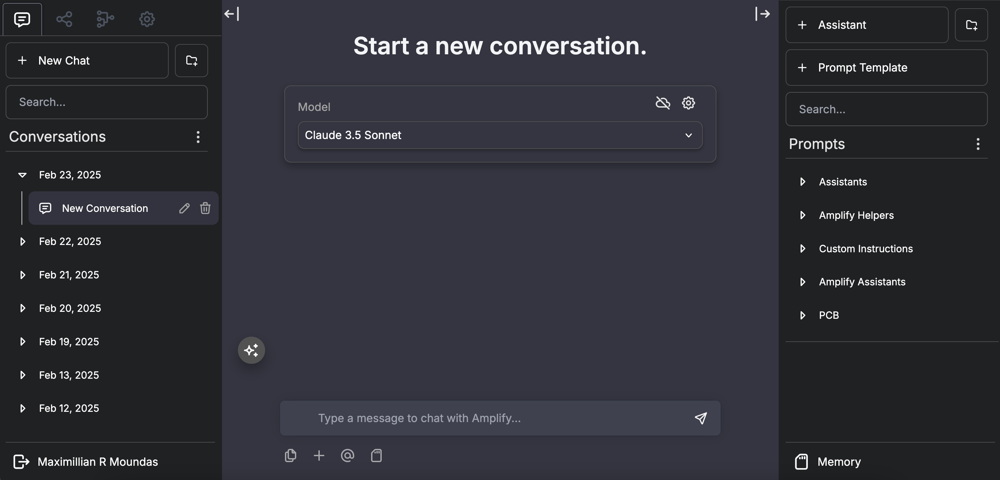
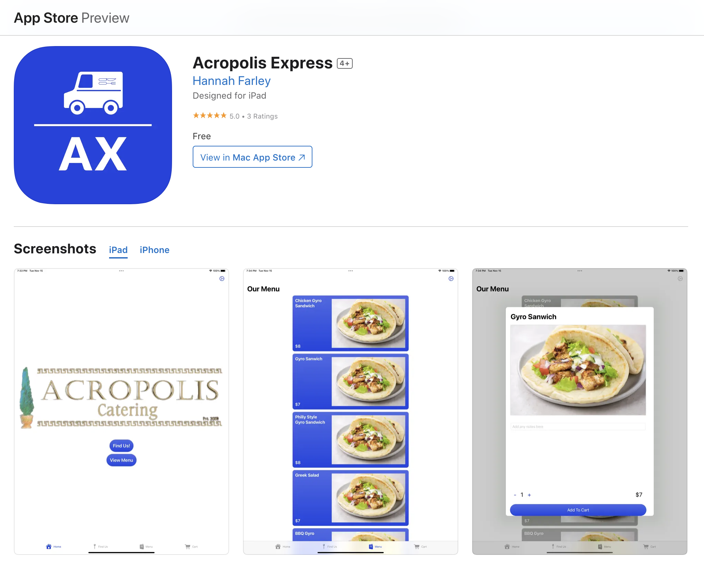

As one of four lead developers for Amplify, I've played a key role in creating an open-source
enterprise generative
AI platform that has been adopted by over 10 universities. Amplify provides organizations with a
scalable, secure
way to implement AI solutions while maintaining control over data and costs.
Working alongside globally-leading AI expert Jules White at Vanderbilt University's Institute for
Software Integrated
Systems, I've architected and implemented several critical features for the platform. These include
memory systems
that enable more contextual AI interactions, a novel RAG Fusion system for improved information
retrieval, robust
API integration capabilities, artifact generation functionality, and comprehensive admin monitoring
tools.
One of our most significant achievements with Amplify has been its remarkable efficiency and
scalability. The
platform currently serves over 18,000 users while maintaining an average cost of only $3 per user
per month. This
cost-effectiveness, combined with the platform's powerful features, has made it an attractive
solution for
educational institutions and organizations looking to adopt generative AI technologies.
This project has deepened my expertise in large language models (LLMs), retrieval augmented
generation (RAG), and
prompt engineering while providing hands-on experience with enterprise-scale AI deployment
challenges.

For my Senior Computer Science Capstone Project at Vanderbilt University, I had the opportunity to
work with three other students to develop a website called RateMyClass. This website, similar to
RateMyProfessor, was designed to help Vanderbilt students make informed decisions about the courses
they take by providing them with access to reviews of courses.
We built RateMyClass with JavaScript, Node.js, and Firebase as our database. The website enables
students to review Vanderbilt classes, provide feedback on their experiences, and view other
students' reviews of classes. These features and tools advise students on which courses to take via
a user-friendly and efficient website that is easy to navigate.
My team placed second in the Vanderbilt Immersion Computer Science Competition for this project. Its
development helped me to better understand how to build web applications and the importance of
providing users with a high-quality user experience. I look forward to continuing to work on
projects that improve convenience for users and help users make more informed decisions.

For my Principles of Software Engineering course at Vanderbilt University, I had the opportunity to
work with three other students to develop an iOS application for a local food truck called Acropolis
Express. Our goal was to create a user-friendly app that would allow customers to order and pay for
their food through their mobile devices, as well as providing them with important information about
the food truck's hours and location.
We built the Acropolis Express app with Swift, SwiftUI, Xcode and FireBase. The app enables customers
to view the menu, view the location and hours of the truck, place orders, and pay for orders from
anywhere. The app enables employees of the food truck to view and manage orders, as well as update
information about the truck's hours, location, and menu data. These features and tools have helped
to make the food truck's operations more efficient and streamlined, while also providing customers
with a better overall experience.
This project has helped me to develop a deep understanding of mobile app development and the
importance of creating user-friendly interfaces. I look forward to continuing to work on projects
that can help to make people's lives easier and more enjoyable.
As part of my Rapid Prototyping class, I had the opportunity to design and print a customized phone
case for my iPhone 13 Pro. This project challenged me to apply my creativity and technical skills to
develop a functional and unique product. I used the Fusion 360 CAD software to incorporate a Lego
brick attachment feature to the back of the case, and I used SuperSlicer to create the g-code file
for printing. The phone case was printed using a Voron 300.
Throughout this project, I had to iterate on the design to address certain issues that arose during
the printing process. For example, in the first iteration, I realized that the holes for the phone
buttons were not aligned properly. This meant that I had to go back to the drawing board and make
modifications to the design before printing again. This iterative process was both challenging and
rewarding, as it allowed me to develop my problem-solving and critical thinking skills while also
improving the final product. This project was an excellent opportunity to put my technical skills
and creativity to the test and produce a unique and functional product.